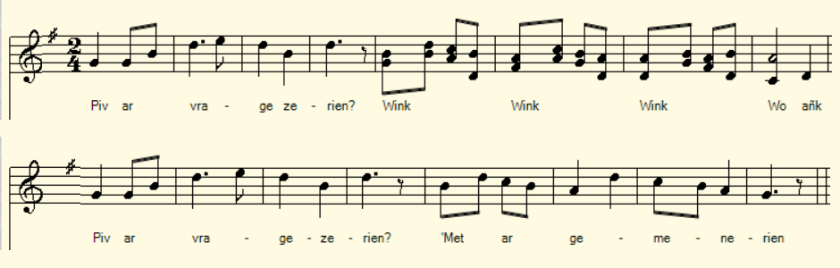

Son ar gemenerien
La chanson des tailleurs
The tailors' song
Chant noté par Théodore Hersart de La Villemarqué
dans le 3ème Carnet de Keransquer (p. 106) .

Mélodie
|
A propos de la mélodie: La mélodie que l'on entend est donnée par l'Abbé François Cadic pour accompagner la chanson "Le tailleur" publiée dans "La paroisse bretonne de Paris" de mai 1901. A propos du texte Il s'agit d'un des nombreux chants qui débitent des méchancetés contre les tailleurs. La classification Malrieu en distingue plusieurs catégories: M00421 :"Ar c'hemener kouezhet er marchosi", le tailleur qui tombe par la trappe de l'écurie dans un drap qu'on emporte et qu'on jette dans un étang. M00623 :"Kammdro ar c'hemener", la ruse du tailleur pour épouser une noble dame ou "Rousic le tailleur". M00648 :"Kemenerien naoniek", le tailleur affamé. M00651 :"Kemener", le tailleur est laid, voleur, vantard et coureur de jupons. M00652 :"Ar c'hemener pa vo interet", l'enterrement du tailleur. M00654 :"Ar c'hemener klañv", le tailleur malade. M01629 :"Ur c'hemener n'eo ket un den", le tailleur n'est pas un homme... Le carnet 2, p 1110 contient un autre chant La fête des tailleurs qui n'est guère plus tendre avec cette corporation, tandis que le Barzhaz de 1839 se moquait, dans Les nains d'un tailleur sur le mode surréaliste. |
About the melody: Unknown. The melody that we hear is given by Abbé François Cadic to accompany the song "The Tailor" published in "La paroisse bretonne de Paris" of May 1901. About the text This is one of the many songs that spout wickedness against tailors. The Malrieu classification distinguishes several categories: M00421: "Ar c'hemener kouezhet er marchosi", the tailor who falls through the stable hatch into a sheet that is taken away and thrown into a pond. M00623: "Kammdro ar c'hemener", the tailor's ruse to marry a noble lady or "Rousic the tailor". M00648: "Kemenerien naoniek", the hungry tailor. M00651: "Kemener", the tailor is an ugly thief and a boastful womanizer. M00652: "Ar c'hemener pa vo interet", the tailor's funeral. M00654: "Ar c'hemener klañv", the sick tailor. M01629: "Ur c'hemener n'eo ket un den", the tailor is not a man ... Notebook 2, p 1110 contains another song The feast of the tailors Guild which is hardly more affectionate with this corporation, while the Barzhaz of 1839, in The dwarves makes fun of a tailor in surreal fashion. |
|
BREZHONEK p. 106 1. Piv ar vragezerien? Wink, wink. wink. wo - ank Piv ar vragezerien? 'met ar gemenerien! ___ 2. Me o gwel o tonet Wink, wink wank wo - ank Me o gwel o tonet Dindan Koad-ar-Faoued. __ (rongeur [?]) 3. Rez hag an neñv. O plegañ o divskoaz. -- 4. Rez hag ar c'hael O c’holein o divhar, 5. Ar bolotennoù neud, ( la veste / vêtement ) E fourchoù o loereu. (pelote de fil dans le pantalon) = 6. An drailhadoù lien E lakaant d’ober tan. p. 107 7. Ar poch ar ratailh [?] Ne deu ket enep tailh. KLT gant Christian Souchon |
TRADUCTION FRANCAISE p. 106 1. Les culottiers, qui sont-ils donc? Grouin, grouin. grouin. gron-gron Les culottiers qui sont-ils donc Ce sont des tailleurs, rien d'autre sinon! ___ 2. J'en vois [une harde] approcher Grouin, grouin. grouin. gron-gron J'en vois une harde approcher Dans le sous-bois du côté du Faouet. __ ([Le refrain imite le bruit des] rongeurs) 3. On voit au ras de l'horizon [Passer les tailleurs] qui font le dos rond. -- 4. [Ils passent] au ras de la haie Qui cache à la vue leurs jambes [arquées], 5. Des pelotes de fil ils ont, ( la veste / vêtement ) Dans l'enfourchure de leurs caleçons (bas). (pelote de fil dans le pantalon) = 6. Ainsi que des bouts de tissus: Ils feront du feu avec [ce surplus]. p. 107 7. La poche à mettre les retailles [?] Quelle que soit la mode est sans faille. [1] Traduction Ch. Souchon (c) 2020 |
ENGLISH TRANSLATION p. 106 1. Tell me; what are breeches-makers Grunt, grunt. grunt. snort - snort Tell me; what are breeches-makers Are they anything else but mere tailors? ___ 2. Look [a herd] of them's drawing near Grunt, grunt. grunt. snort - snort Look [a herd] of them's drawing near In Faouet wood's undergrowth they appear. __ ([The burden imitates the snorting of] boars) 3. Look, on the horizon they loom Arching their backs [across the field of broom]. - 4. [But now they pass] along the hedge To prevent us from seeing their bandy legs, 5. Plenty of reels of thread they bear, (their jackets / their clothing) They've thrust in the crotch of their underwear ( stockings ). (they wear balls of yarn in their pants) 6. Old fabric shreds they wear [and wire] With which they'll be able to light a fire. p. 107 7. And for spare fabric [?] they've a pouch Fashion never will force them to retouch. [1] Translated by Christian Souchon(c) 2021 |
NOTES
| [1] Bien que le texte des pages 106 et 107 soit , une fois n'est pas coutume, particulièrement lisible, ce chant n'en demeure pas moins quelque peu hermétique. Les "culottiers" qui viennent du Faouet sont assimilés à une harde de bêtes sauvages, des sangliers semble-t-il, à en juger par les onomatopées qui tiennent lieu de refrain. Les deux dernières strophes paraissent suggérer que les tailleurs mettent de côté une partie du tissu que leur clientèle leur confie et qu'ils se servent des chutes inexploitables pour allumer le feu. Leurs sacs sont si pleins de leurs rapines qu'il sont obligés de loger leurs bobines de fil dans leurs chausses. | [1] [1] Although the text on pages 106 and 107 is, for once, particularly readable, this song nonetheless remains somewhat hermetic. The "breeches-makers" who come from Faouet are assimilated to a herd of wild beasts, wild boars it seems, judging by the onomatopoeias inserted into each stanza as a burden. The last two stanzas seem to suggest that the tailors put aside a part of the fabric that their customers entrust to them and that they use the unusable falls to light fire. Their bags are so full of their plunder that they are forced to thrust their spools of thread in their hoses. |